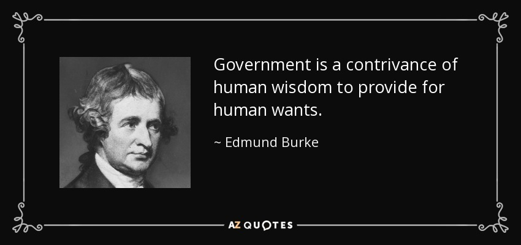
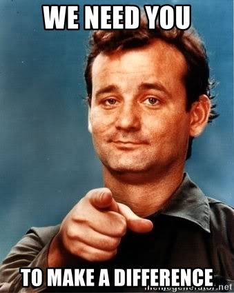
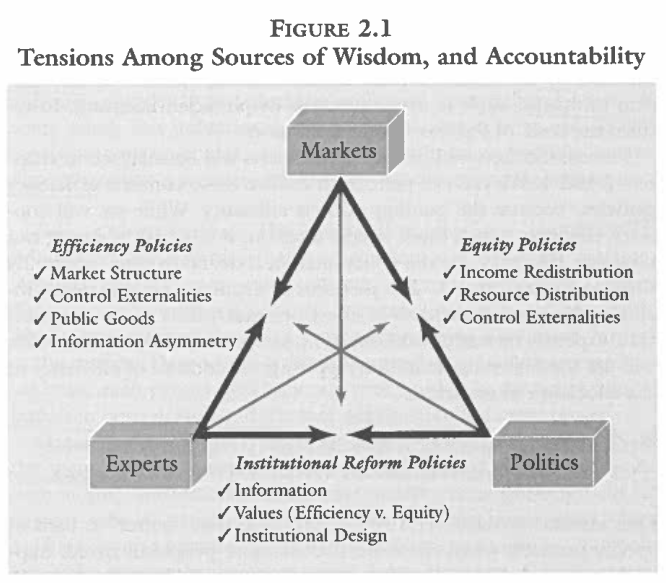
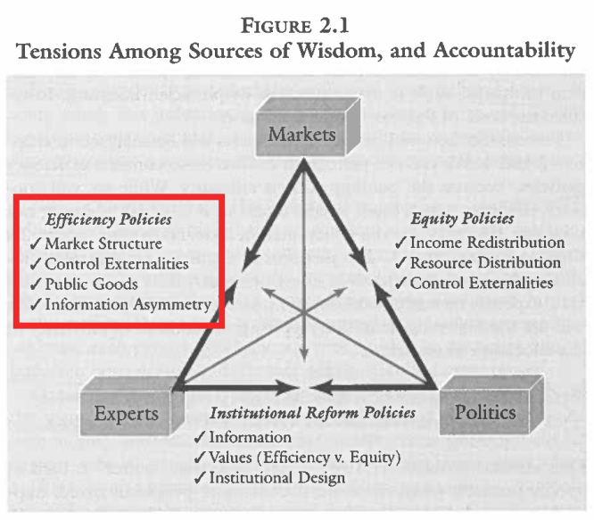
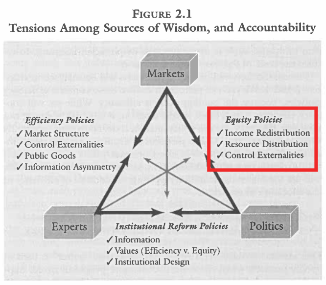
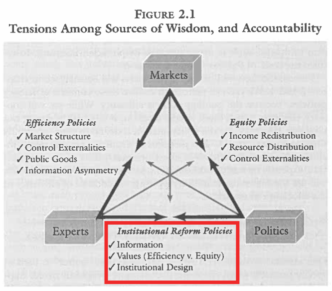
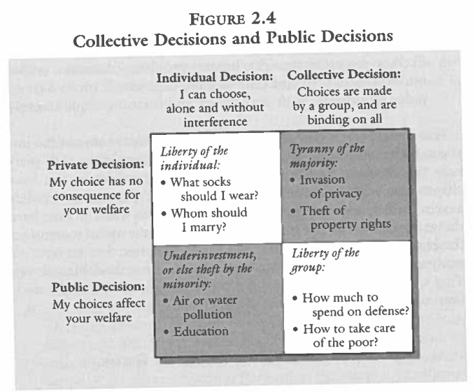

Today’s Agenda
A Crash Course in Public Policy
Why do societies make policy?
What are the basic pre-req’s for making policy?
Justin Leinaweaver (Spring 2025)
1) The Basics of Problem-Solving in a Community
1) The Basics of Problem-Solving in a Community
“Politics” in everything
1) The Basics of Problem-Solving in a Community
The Trouble with Wilderness
1) The Basics of Problem-Solving in a Community
We need policy!
Policy Defined
“A definite course or method of action selected (as by a government, institution, group or individual) from among alternatives and in the light of given conditions to guide and usually determine present and future decisions…” (Webster’s Third International Dictionary).
Policy Defined
“A definite course or method of action selected (as by a government, institution, group or individual) from among alternatives and in the light of given conditions to guide and usually determine present and future decisions…” (Webster’s Third International Dictionary).
Policy Defined
“A definite course or method of action selected (as by a government, institution, group or individual) from among alternatives and in the light of given conditions to guide and usually determine present and future decisions…” (Webster’s Third International Dictionary).
Policy Defined
“A definite course or method of action selected (as by a government, institution, group or individual) from among alternatives and in the light of given conditions to guide and usually determine present and future decisions…” (Webster’s Third International Dictionary).
Policy Defined
“A definite course or method of action selected (as by a government, institution, group or individual) from among alternatives and in the light of given conditions to guide and usually determine present and future decisions…” (Webster’s Third International Dictionary).
A useful policy proposal MUST:
Be specific,
Be adapted to the specific stakeholders,
Be adapted to the conditions on the ground, and
Include an evaluation of strong alternative proposals.



The “Wisdoms”
The Cause
The Importance
Solution Types
Effectiveness Criteria
Introduce your “wisdom”
What are the “primary” causes of our problems?
What are the “best” kinds of policy designs?
What are the “right” criteria for evaluating effectiveness?
What are the strengths and weaknesses of this perspective?
Applying the “Wisdoms”
Propose a policy to manage this resource
Explain the criteria we should use to monitor its effectiveness
Identify who in our society will benefit and who will pay the costs




We Need a Policy
Argument 1: This is a public problem
Argument 2: This requires a collective decision
1. This is a public problem
Private Problem
- “My choice has no consequence for your welfare”
Public Problem
- “My choices affect your welfare”
We Need a Policy
Argument 1: This is a public problem
Argument 2: This requires a collective decision
2. This requires a collective decision
Individual Decision
- “I can choose, alone and without interference”
Collective Decision
- “Choices are made by a group, and are binding on all”
We Need a Policy
